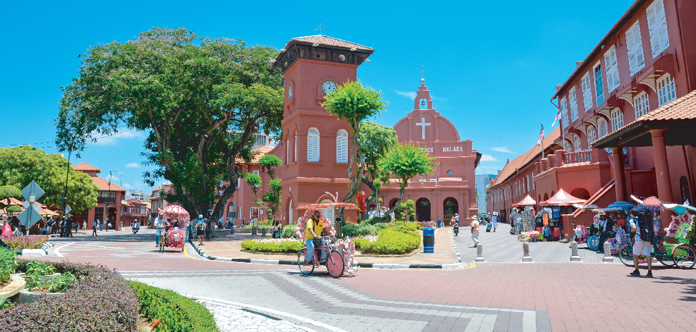

其實馬來西亞早從七世紀就已經出現，但當時還未稱爲馬來西亞。從那個時候開始，馬來西亞經歷了不少改朝換代的發生，也被不少國家殖民過，如葡萄牙，荷蘭，英國和日本，最終在1957年8月31日獨立與殖民地，當時被稱爲馬來亞，并在1963年9月10日與新加坡，沙巴和砂拉越共同組成馬來西亞聯邦，也就是現在的馬來西亞，但是新加坡因理念不同而在1965年8月9日脫離馬來西亞，自成一國。這樣的歷史背景，讓馬來西亞許多地方都有著這些殖民囯所留下的東西，如建築物，宗教等。這些歷史遺留下來的建築物，如今也成爲了馬來西亞的熱門景點。

1. 馬六甲（Melaka)
馬六甲有著古城之稱。馬六甲這個名字來自于馬六甲王朝的建立者拜裏米蘇拉。當時的他剛好打獵結束，坐在一棵馬六甲樹下休息，他的其中一條獵狗將一隻鼠鹿逼到絕境，爲了自衛，鼠鹿把獵狗踢進河裏。他對那隻鼠鹿印象深刻，因而決定在那個地方建立一個王國，並以這個樹的名字為王國命名，馬六甲樹和鼠鹿也成爲了馬六甲州的其中一個象徵。馬六甲王朝前後和中國明朝有著邦交，之後先後被葡萄牙，荷蘭和英國殖民，一直到1948年加入馬來亞聯邦。馬六甲獲得了許多國際媒體的贊譽。馬六甲以飲食和歷史遺跡聞名，其中以娘惹傳統美食最爲出色，當然還有其他特色街頭美食。馬六甲的歷史建築物也都是殖民期間所留下來的歷史遺跡。
2. 檳城（Pulau Peneng）
檳城，又稱檳州，分成檳島和位於馬來半島的喬治市兩部分，以檳威海峽爲界。2008年，檳城和馬六甲一同被聯合國教科文組織列爲世界文化遺產。在15世界，當時的檳城稱爲檳榔嶼，在那時已和中國通訊，而在之後被吉打州割讓給英國殖民。根據歷史紀錄，15世界檳榔嶼和中國的通訊，為中國後續的發展帶來非常大的影響，例如由中國國父發起的“黃花崗起義”，其重要骨幹會議即在檳榔嶼進行。檳城著名地標暨華人寺廟-極樂寺内部的“大雄寶殿”和“海天佛地”也分別是光緒皇帝和慈禧太后的御筆。
3. 霹靂（Perak）
霹靂是馬來西亞的其中一個州屬，其馬來名Perak即爲馬來語“銀”的意思，也就是霹靂州在過去殖民時期繁榮的原因。傳説中霹靂州曾是一個興都教王國，名爲剛迦王國，據説是馬六甲王朝最後一任蘇丹在葡萄牙進攻馬六甲后逃離到此處，成立了新的王朝。因爲霹靂州盛產錫礦，17世紀和18世紀時荷蘭和英國都爲了錫礦產業先後殖民了霹靂，也是直到1957年才隨著馬來亞的成立而獨立。霹靂有著各種被國際承認的世界遺產，其中最出名的是2012年被聯合國列入世界文化遺產的玲瓏谷地，還有作爲英殖民童子軍集所的大鐘樓斜塔。